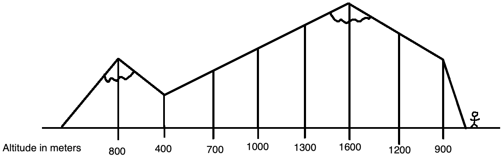

January 8th, 2026
Sparse Tables
Suppose a hiker is mapping out a mountain range. They walk across the mountain and record their current altitude in meters at important landmarks in this diagram:

These measurements can then be expressed in an array:
| Index # | 1 | 2 | 3 | 4 | 5 | 6 | 7 | 8 |
|---|---|---|---|---|---|---|---|---|
| Altitude in meters | 800 | 400 | 700 | 1000 | 1300 | 1600 | 1200 | 900 |
From this array, the highest altitude in this entire mountain range is 1300 meters. But some travellers may only traverse part of this mountain range; for example, someone that travels from landmark 1 to 4 reaches a maximum altitude of 1000 meters, and another person who travels from landmark 7 to 8 reaches a maximum altitude of 1200 meters. These continuous segments are referred to as subarrays.
Now imagine that many tourists ask about the highest altitude they can reach by traversing an arbitrary segment of this mountain range. Thus, a method to find the maximum value of any subarray in this measurement array is required, and each question must be answerable in a practically instant amount of time. An initial solution is to build a table with the maximum altitudes reached for every subarray from index \(X\) to \(Y\) like below:
| X = 1 | X = 2 | X = 3 | X = 4 | X = 5 | X = 6 | X = 7 | X = 8 | |
|---|---|---|---|---|---|---|---|---|
| Y = 1 | 800 | - | - | - | - | - | - | - |
| Y = 2 | 800 | 400 | - | - | - | - | - | - |
| Y = 3 | 800 | 700 | 700 | - | - | - | - | - |
| Y = 4 | 1000 | 1000 | 1000 | 1000 | - | - | - | - |
| Y = 5 | 1300 | 1300 | 1300 | 1300 | 1300 | - | - | - |
| Y = 6 | 1600 | 1600 | 1600 | 1600 | 1600 | 1600 | - | - |
| Y = 7 | 1600 | 1600 | 1600 | 1600 | 1600 | 1600 | 1200 | - |
| Y = 8 | 1600 | 1600 | 1600 | 1600 | 1600 | 1600 | 1200 | 900 |
Any tourist’s query can now be answered by instantly looking up the specific subarray in this table. This method is effective, but also tedious because for any positive value \(C\), increasing the length of this array by a factor of \(C\) will increase the number of subarrays computed by a factor of \(C^2\). In this example, all 36 possible subarrays are computed, which is manageable. But suppose on larger scale, a robot took far more measurements on the mountain, such as a million. This table method would then have to compute the maximum value of each of roughly 5 trillion subarrays, which is infeasible even with a computer.
There is a more efficient way because not every subarray maximum value has to be literally computed. For example, knowing that maximum values for the subarrays from index 1 to 4 and index 3 to 6 to be 1000 and 1600 respectively is enough to conclude that the maximum value for the subarray from index 1 to 6 must be 1600. This is because every index from 1 to 6 is in at least one of these subarrays, thus the maximum value for the entire subarray must be the higher of 1000 and 1600. This important observation motivates the following sparse table.
Let \(L\) be the length of a subarray. Start by “computing” the maximum value of every single element subarray.
| Subarray length | X = 1 | X = 2 | X = 3 | X = 4 | X = 5 | X = 6 | X = 7 | X = 8 |
|---|---|---|---|---|---|---|---|---|
| L = 1 | 800 | 400 | 700 | 1000 | 1300 | 1600 | 1200 | 900 |
The maximum of the subarray of length \(L\) from index \(X\) to \(X+L-1\) inclusive is equal to the higher of the maximums for the subarray from index \(X\) to \(X+L/2-1\) and index \(X+L/2\) to \(X+L-1\). The computed subarray maximums for \(L = 1\) can then be used to compute the subarray maximums for \(L = 2\):
| Subarray length | X = 1 | X = 2 | X = 3 | X = 4 | X = 5 | X = 6 | X = 7 | X = 8 |
|---|---|---|---|---|---|---|---|---|
| L = 1 | 800 | 400 | 700 | 1000 | 1300 | 1600 | 1200 | 900 |
| L = 2 | 800 | 700 | 1000 | 1300 | 1600 | 1600 | 1200 | - |
This information can then be used to compute the subarray maximums for \(L = 4\):
| Subarray length | X = 1 | X = 2 | X = 3 | X = 4 | X = 5 | X = 6 | X = 7 | X = 8 |
|---|---|---|---|---|---|---|---|---|
| L = 1 | 800 | 400 | 700 | 1000 | 1300 | 1600 | 1200 | 900 |
| L = 2 | 800 | 700 | 1000 | 1300 | 1600 | 1600 | 1200 | - |
| L = 4 | 1000 | 1300 | 1600 | 1600 | 1600 | - | - | - |
And lastly in this case, \(L = 8\) (further steps would use larger powers of 2 for \(L\)):
| Subarray length | X = 1 | X = 2 | X = 3 | X = 4 | X = 5 | X = 6 | X = 7 | X = 8 |
|---|---|---|---|---|---|---|---|---|
| L = 1 | 800 | 400 | 700 | 1000 | 1300 | 1600 | 1200 | 900 |
| L = 2 | 800 | 700 | 1000 | 1300 | 1600 | 1600 | 1200 | - |
| L = 4 | 1000 | 1300 | 1600 | 1600 | 1600 | - | - | - |
| L = 8 | 1600 | - | - | - | - | - | - | - |
The maximum of any subarray from index \(A\) to \(B\) can then be computed using this sparse table in 3 steps:
- Compute \(N\), the length of the subarray. (\(N = B - A + 1\))
- Determine \(M\), the largest power of 2 (1, 2, 4, 8, 16, 32…) satisfying \(M \leq N\).
- Look in the row \(L = M\) and choose the larger of the values in columns \(X = A\) and \(X = B - M + 1\), representing the subarrays from index \(A\) to \(A + M - 1\) and index \(B - M + 1\) to \(B\). These subarrays are guaranteed to cover every index from \(A\) to \(B\).
As an example, suppose a tourist wanted to know the highest altitude (maximum) between landmarks 2 to 4. Use the method to determine the maximum of the subarray from index 2 to 4:
- \(N = 4 - 2 + 1\) => \(N = 3\)
- \(M = 2\) (largest power of 2 less than or equal to 3)
- Value in \(L = 2, X = 2\) is 700; value in \(L = 2, X = 4 - 2 + 1 = 3\) is 1000. Thus the maximum altitude between landmarks 2 to 4 is 1000.
With the sparse table, only 21 total subarrays have their maximum computed, compared to 36 with the naive table approach. Where this efficiency is more pronounced is with more measurements; for any positive value \(C\), increasing the length of the array by a factor of \(C\) will now only increase the number of subarrays computed by a factor of \(C\text{log}(C)\). Going back to the robot scenario, if the array consisted of a million value, the number of maximums for subarrays computed would decrease from roughly 5 trillion with a naive table to 19 million with a sparse table.